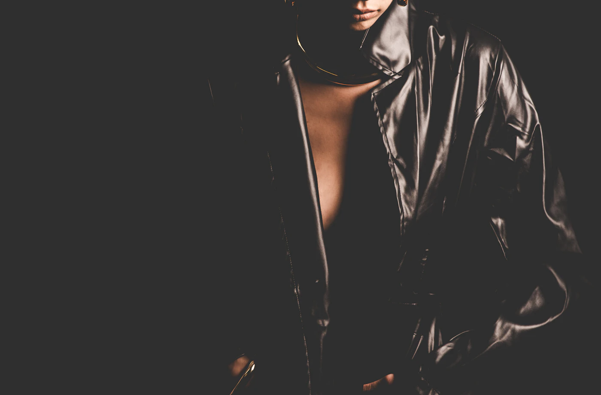

ВОЛГОГРАД · АНГАРСКАЯ, 114
Любимым вещам —
новая история.
Пошив и восстановление вещей из кожи, меха и ткани.

ВИЗУАЛЬНОЕ ВДОХНОВЕНИЕ · UNSPLASHУСЛУГИ АТЕЛЬЕ
Продолжение
любимой вещи.
Кожа · мех · ткань
Индивидуальный пошив
Одежда и аксессуары по вашей идее — из кожи, меха или ткани.
Обсудить пошив ↗Ремонт и реставрация
Вернём форму и обновим вещи из кожи, меха и ткани.
Показать мастеру ↗Перекрой и посадка
Изменение фасона и точная подгонка по фигуре.
Обсудить переделку ↗Покраска и уход
Обновление цвета кожи, меха и аксессуаров. Возможность обработки уточните у мастера.
Уточнить детали ↗Стоимость и сроки мастер рассчитает по самой вещи.
ОДЕЖДА · ФАКТУРА · РЕМЕСЛО
Вещи в новом
движении.
Образы из открытой коллекции Unsplash.
АТЕЛЬЕ GH-LEATHER
Сохраняем
важное.
Приносите вещь, материал или идею.
Расскажите мастеру, что нужно сделать.
Узнайте цену и сроки.
Получите обновлённую вещь.
НЕСКОЛЬКО ОТВЕТОВ
Перед
знакомством.
Можно со своим материалом?
Да. Пригодность материала для вашей идеи обсудите с мастером.
Вы работаете только с одеждой?
Также с сумками, обувью, аксессуарами, мебелью и автосалонами.
Как узнать цену и сроки?
Пришлите фото вещи в Telegram или позвоните в ателье.
Как можно оплатить заказ?
На сайте ателье указана оплата картой, по QR-коду, банковским переводом и наличными. Детали расчёта уточните при заказе.
ДАВАЙТЕ ЗНАКОМИТЬСЯ
Давайте
обсудим.
Волгоград, ул. Ангарская, 114
Рядом с поликлиникой № 30.Вход с торца магазина «МАН».Построить маршрут ↗
Пн–пт 09:00–19:00
Сб–вс 10:00–18:00
уточните расписание по телефону.